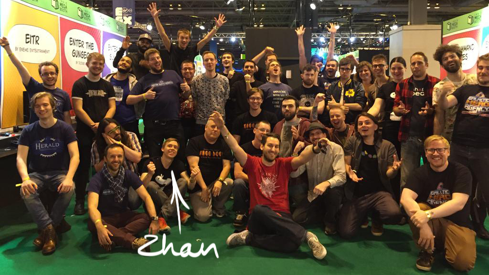

Hi, my name is Zhan and I am very passionate about games design. I graduated from the University of Arts London in 2014 with a Game Design Degree, on the way I met a lot of awesome people, with whom I collaborated and made plenty of games and peculiar prototypes. Here you can look at my portfolio, mainly comprised of: university projects, published games and games that are currently in development.

Picture from EGX 2015
I am interested in games design all around, I like creating concept art, graphics, game design documents, I like to code mechanics and see how they fit in with the game world, I like to develop replayability and improve interaction. Nonetheless, my favourite aspect of game development is – development of formal game systems, I enjoy balancing and developing game objects, what they will do and how they will interact. I research in depth gameplay and what aspects can make the overall experience more engaging. I focus on every object and iterate it according to the feedback, to meet expectations with reality as close as possible.
Features:
University of Arts London- alumni page